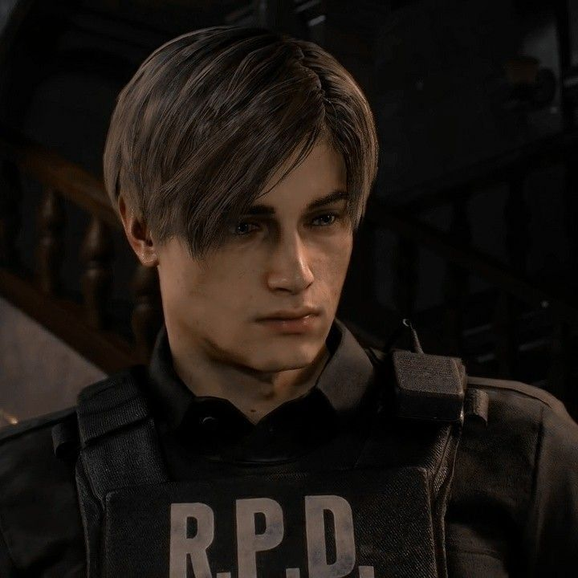
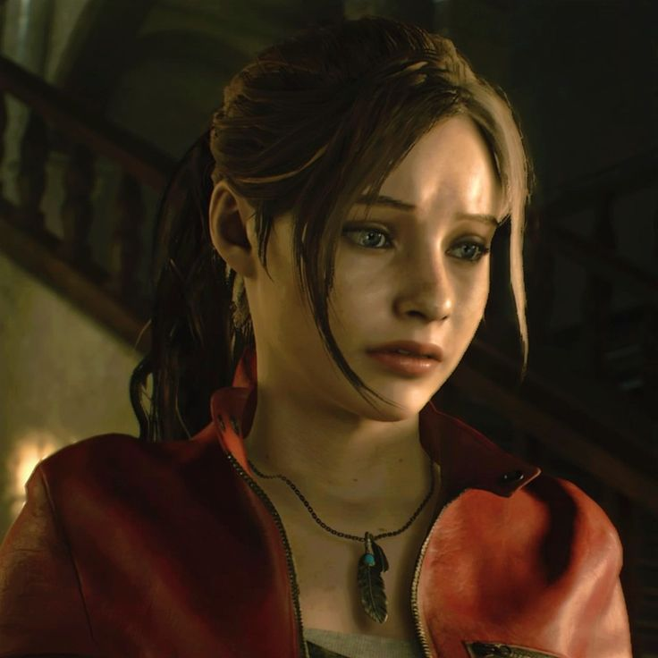
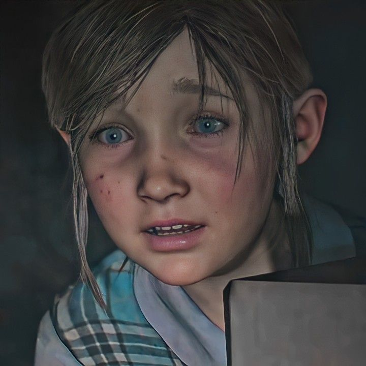

-
Leon.Kennedy
Descrição
Leon Scott Kennedy (レオン・スコット・ケネディ) é um agente americano da D.S.O, divisão essa que ajudou a criar ao lado do Presidente dos Estados Unidos, tendo um cargo de muita confiança e respeito das altas autoridades dos Estados Unidos, tendo sido amigo do falecido Presidente Adam Benford. Antes disso, Leon serviu como policial pelo Departamento de Policia de Raccoon City(R.P.D) por apenas um dia. Ele se interessou em entrar para a policia depois de saber sobre os estranhos eventos que aconteceu em Arklay Mountains, no ano de 1996. Depois do Incidente de Raccoon City, ele recebeu uma oferta tentadora e foi instruído a prestar serviços para o governo dos Estados Unidos pela US-STRATCOM até 2011.
-
Ada Wong

Descrição
Ada Wong (エイダ・ウォン) ' é o pseudônimo de uma espiã americana-chinesa, que de outra forma não sabemos se este é seu verdadeiro nome. Inicialmente uma agente privada, Ada foi atraída para o mundo da espionagem quando ela foi recrutada por uma empresa rival da Umbrella Corporation.
-
Claire Redfield
Descrição
Claire Redfield (クレア・レッドフィールド) é uma ativista de uma organização de direitos humanos chamada TerraSave desde 2005, e a irmã mais nova de Chris Redfield e tem muito orgulho do trabalho do irmão, desde a época dos S.T.A.R.S. Ela tem personalidade forte e mesmo sendo somente uma civil, ela sabe manejar armas e lockpicks muito bem, graças às lições que aprendeu com o irmão mais velho. Claire levava uma vida perfeitamente normal, sendo uma estudante apaixonada por motocicletas, até o repentino desaparecimento de Chris. Ela decidiu ir até Raccoon City tentar descobrir o paradeiro de seu irmão e se envolveu na trágica história da cidade junto de Leon S. Kennedy. A partir daí, Claire se viu comovida com as vítimas da pesquisa ilegal e do bioterrorismo e se tornou uma ativista para combater esse tipo de atividade.
-
Sherry Birkin
Descrição
Sherry Birkin (シェリー・バーキン) é um agente federal americano ligado à Divisão de Operações de Segurança. Quando criança, ela foi colocada sob custódia protetora após a morte de seus pais durante o Incidente de Destruição da Cidade de Raccoon. Durante o surto, Sherry foi infectada com o G-Virus, mas foi tratada com a vacina logo depois. Por causa de sua exposição ao vírus, Sherry ganhou habilidades regenerativas ao longo da vida.
-
William Birkin

Descrição
Dr. William Birkin (ウィリアム・バーキン) foi um virologista que trabalhou para a Umbrella Farmaceuticas entre as décadas de 1970-1990. Um dos principais cientistas por trás do aperfeiçoamento do T-Vírus e descobridor do Vírus Gólgota, ao qual era chefe do projeto de pesquisa, ele se voltou contra a Corporação Umbrella após não conseguir uma promoção para ser incluído em seu círculo de membros executivos, culminando com a empresa realizando tentativas para impedi-lo de fechar um acordo não autorizado com os militares americanos que acabaram servindo como um catalisador do Incidente de Destruição de Raccoon City. Birkin também era o marido de Annette Birkin e pai de Sherry Birkin.
-
Anette Birkin

Descrição
Dra Annette Birkin (アネット・バーキン) foi uma pesquisadora do NEST, uma das instalações da Umbrella Corporation; durante os seus trabalhos ela iniciou um relacionamento com o seu chefe William Birkin, os dois se casaram e um tempo depois (dois anos antes da descoberta do G-Vírus) Annette deu a luz à Sherry Birkin.